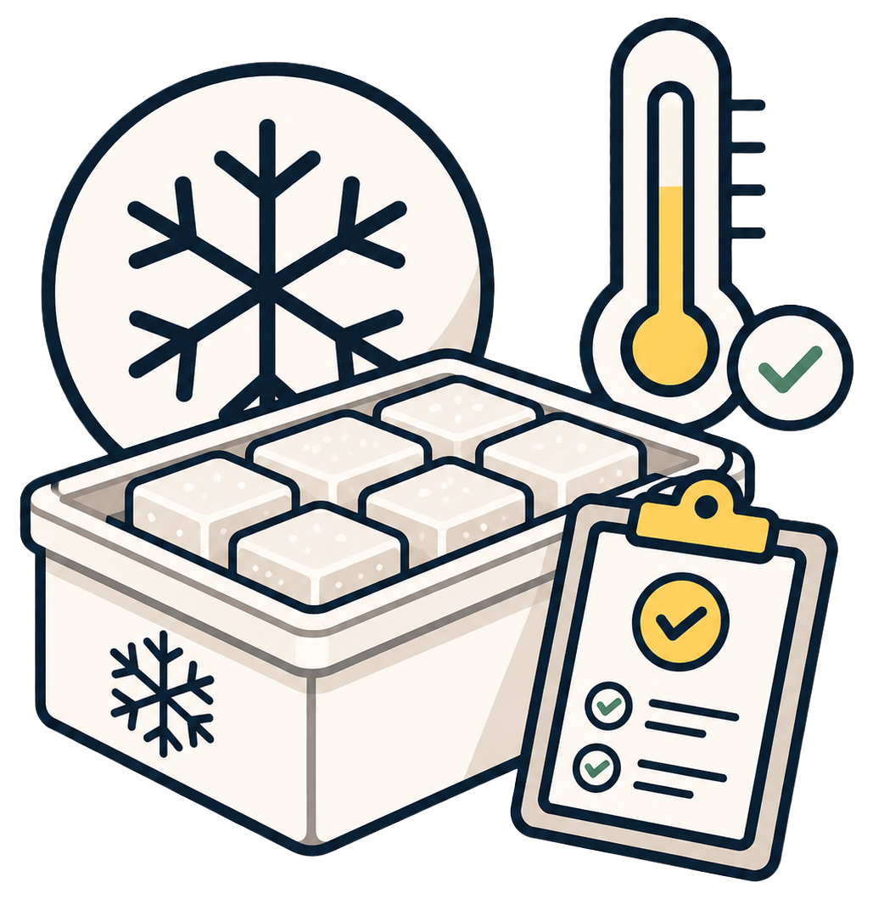

Capacitaciones claras, dinámicas y aplicables para equipos. Mejoramos prácticas reales para trabajar con más control, orden y seguridad.
Asesoría Bromatológica Rosario
Hola, somos ABR.
Te ayudamos a producir alimentos
seguros
legales
rentables
Asesoría bromatológica con criterio técnico real: RNE, RNPA, DOMI, HACCP, rotulado y Sin TACC. Para que dejes de pelearte con trámites y vuelvas a hacer lo que te apasiona: producir.
Trabajamos con industrias, PyMEs y emprendimientos en todo el país y todos los rubros: cárnicos, embutidos, panificados, lácteos, bebidas, conservas, congelados, rotiserías y gastronomía.
Equipo técnico
Lic. Tecnología de los Alimentos · UNR
Químico · UNR
Magíster en Alimentos · UTN
Enfoque práctico y orientado a resultados. Mejoramos procesos, ordenamos producción y dejamos todo listo para inspecciones, habilitaciones y comercialización.
Destacado
 Listo para vender
Listo para vender
Listo para vender
Evaluamos tu empresa con criterio técnico: higiene, procesos, trazabilidad, registros y riesgos. Te llevás un plan claro para cumplir normativas.
Gestionamos toda la documentación para que tu negocio esté habilitado y listo para vender. Manuales, registros y acompañamiento completo.

Sistemas para ordenar producción y trabajar con estándares. Ideal para crecer, mejorar controles y prepararse para auditorías externas.

Desarrollo y acompañamiento técnico para DOMI sanitario, registros, formulaciones y rotulado de productos de higiene y saneantes.

Si querés ingresar al mercado apto celíacos, te acompañamos con proceso serio: prevención de contaminación cruzada, control de materias primas y documentación.

Asesoramiento técnico en procesos de congelado para mejorar rendimiento y calidad final. Control térmico, estabilidad y estandarización lote a lote.

Confeccionamos el rótulo completo y legal de tus productos: ingredientes, alérgenos, tabla nutricional, peso, lote, vencimiento.
Cómo trabajamos
Cuatro pasos para que tu empresa esté lista para vender.
01
Diagnóstico
Visita técnica o relevamiento remoto. Identificamos riesgos, brechas legales y oportunidades.
02
Plan a medida
Cronograma, prioridades, documentación y entregables. Sabés exactamente qué se hace y cuándo.
03
Implementación
Trámites, manuales, capacitación, rotulado y registros. Te acompañamos hasta vender.
04
Seguimiento
BackOffice, vencimientos, auditorías periódicas. Tu empresa queda preparada para crecer.
Nuevo · Exclusivo ABR
BackOffice ABR. Dejá las planillas 👋🏻
Una plataforma a medida de tu operación: inventario, recetas técnicas, trazabilidad QR, etiquetado nutricional y control de vencimientos en una sola pantalla.
Stock + lotes
Inventario, lotes, RNE de proveedores y movimientos con vista clara para decidir sin fricción.
Etiquetado
Tablas nutricionales, octógonos y etiquetas listas para impresión térmica.
Trazabilidad QR
QR escaneables, planillas para auditoría y vencimientos críticos en una fuente única.
BackOffice ABR
Quiero verlo en mi planta →
¿Qué resuelve?
Ordena la gestión diaria para que puedas producir, auditar y vender con menos fricción y más claridad operativa.
Stock + compras
Inventario, lotes y alertas de reposición sin planillas sueltas.
Recetas + rotulado
Recetas productivas, tablas nutricionales y etiquetas listas.
Trazabilidad + QR
Seguís cada elaboración, lote e insumo escaneable y auditable.
IA integrada
Consultas, análisis y decisiones operativas más rápidas.
- Controla vencimientos de RNPA, habilitaciones y transportes.
- Se adapta a medida a la lógica real de tu negocio.
Demo visual
Recorré el sistema

Panel general
Recordatorios de RNE, RNPA, UTA/URA e informes, con producción por kilos.

Recetas parametrizadas
Caducidad, estacionado, orden de ingredientes y cantidades por unidad.

Tabla nutricional
Información nutricional por porción, calorías, nutrientes y valor diario.

Etiquetado frontal
Octógonos listos para imprimir o descargar por hoja y producto.

Ficha técnica de producto
Descripción, RNPA adjunto, rendimiento, vencimientos y sellos del producto.

Producción y stock
Máximo producible, mínimos, egresos, ingredientes listos y acciones de producción.

Producciones guardadas
Búsqueda, filtros, planillas y vencimientos por cada lote producido.

Trazabilidad lote a lote
Mapa visual desde RNE/RNPA y producción hasta lotes, descongelados y proveedores.
¿Hablamos? Sin compromiso 👋🏻
Contanos tu proyecto en una llamada de 20 minutos. Te decimos qué necesitás, cuánto cuesta y cuánto tarda. Sin tecnicismos, sin vueltas.
Preguntas Frecuentes
ABR ofrece asesoría bromatológica para RNE, RNPA, DOMI sanitario, BPM, POES, HACCP, auditorías, rotulado legal, Sin TACC, capacitaciones y mejora de procesos alimentarios en Rosario y toda Argentina.
No. ABR brinda asesoría en Rosario, Santa Fe y acompaña industrias, PyMEs y comercios de toda Argentina.
Sí. Acompañamos la habilitación, documentación técnica, registros RNE/RNPA, rotulado nutricional y adecuación legal para comercializar con seguridad.
El RNE es la habilitación obligatoria para todo establecimiento elaborador de alimentos en Argentina. ABR gestiona toda la documentación y acompaña el proceso ante SENASA o la autoridad provincial.
El DOMI sanitario es el registro obligatorio ante ANMAT para productos domisanitarios: desinfectantes, detergentes, saneantes y productos de higiene.
Varía según jurisdicción y tipo de producto. ABR agiliza el proceso con documentación técnica completa desde el primer trámite para evitar observaciones y demoras.
ABR implementa BPM, POES y HACCP con manuales técnicos, registros y capacitación del personal. El resultado es una empresa preparada para inspecciones, habilitaciones y auditorías externas.